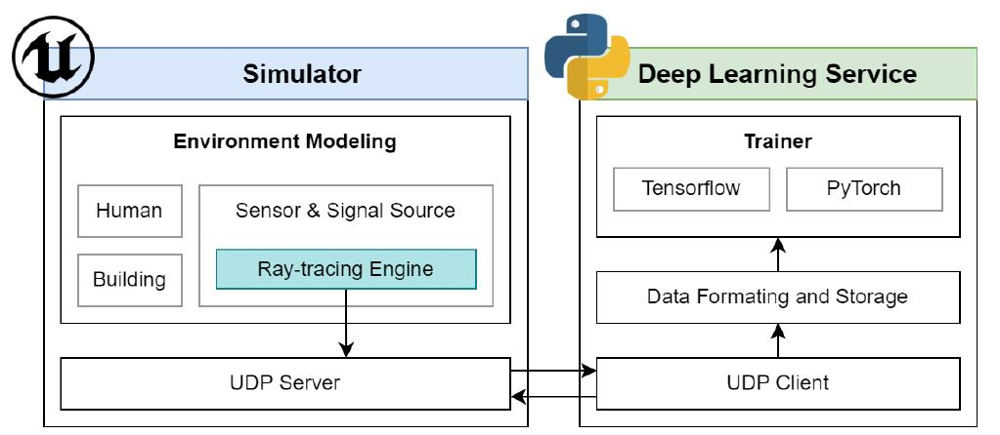
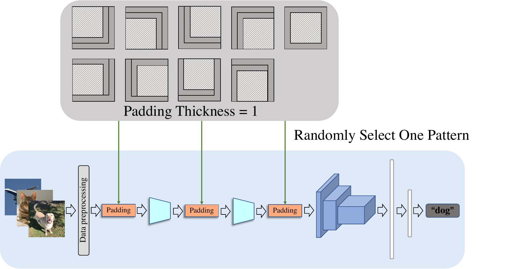
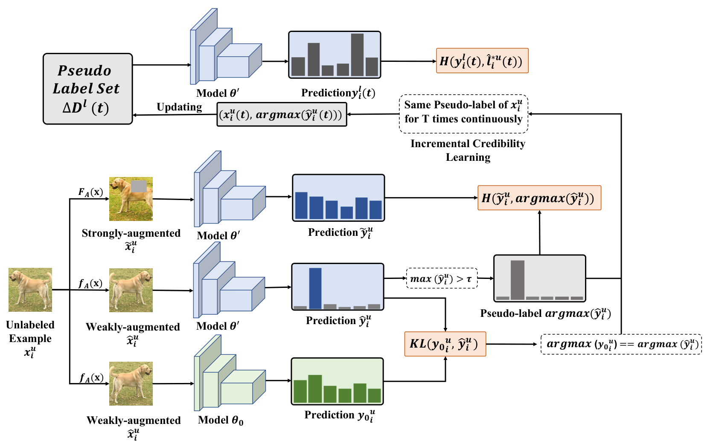
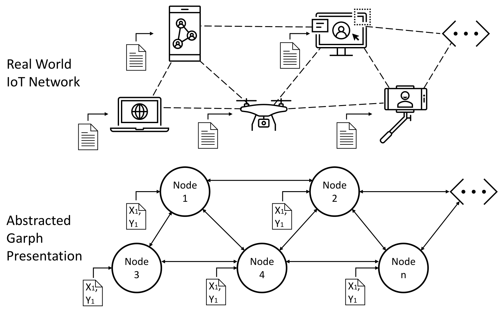
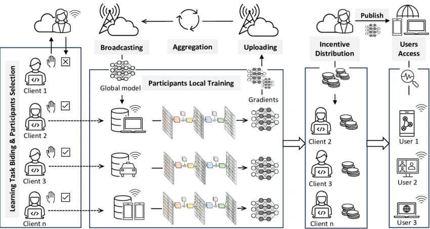
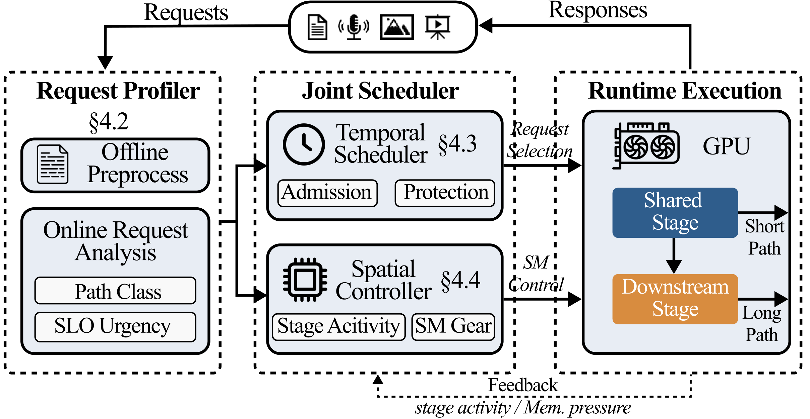
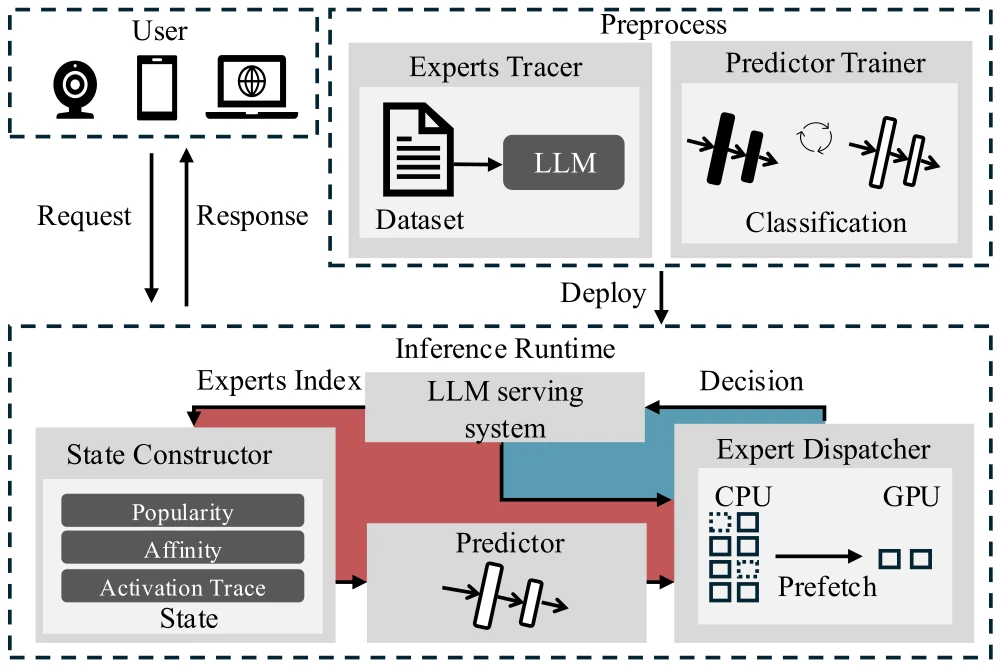
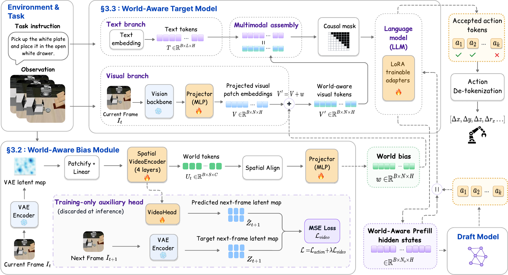

arXiv preprint · 2026
mmRadarTwin
The platform compares real and simulated radar signals in a common representation and records the propagation paths behind simulated returns.
Data
Collecting measurements across many indoor environments takes time. We calibrate digital twins with real measurements so researchers can vary conditions, generate synthetic data and repeat sensing experiments.
Explore Data
arXiv preprint · 2026
The platform compares real and simulated radar signals in a common representation and records the propagation paths behind simulated returns.

arXiv preprint · 2026
PoseCompass selects synthetic camera viewpoints based on localisation difficulty, coverage and rendering quality to help train visual localisation models.

ACM SIGCOMM Posters and Demos · 2022
DeepWiSim generates wireless measurements in a simulator and uses them to train and evaluate deep learning models.

AusDM 2023
Random Padding varies where zeros are added around CNN feature maps to reduce reliance on absolute image positions.
Training
Devices often collect different kinds of data, and much of it is unlabelled. We study how peers can train a model while keeping raw data local and how training objectives and network connectivity affect robustness.
Explore Training
Machine Learning · 2026
A training navigator routes models between peers. DeNAV takes the age of each model update into account during aggregation.

Preprint · 2023
FedIL trains on unlabelled client data with a small labelled dataset at the server. It keeps pseudo-labels that remain stable across rounds.

IEEE Transactions on Parallel and Distributed Systems · 2023
HierMo uses momentum to speed up federated training across workers, edge nodes and a cloud server.

Applied Sciences · 2023
IoT devices update their classifiers from incoming local data and share model information with neighbours.

IEEE Transactions on Neural Networks and Learning Systems · 2025
The survey examines privacy and reliability risks from participant selection through model deployment and compares defenses at each stage.
Inference
When models share limited compute and memory, incoming work can delay responses already in progress. We design scheduling, batching and caching techniques to make response times more predictable.
Explore Inference
IEEE Transactions on Computers · 2026
AgentServe schedules prompt processing separately from token generation and reserves GPU resources to keep token delivery responsive.

arXiv preprint · 2026
HorizonServe coordinates request scheduling and GPU allocation for multimodal models with different response-time targets.

arXiv preprint · 2026
DuoServe-MoE overlaps expert weight transfers with prompt processing and preloads likely experts during token generation.

arXiv preprint · 2026
WA-SpecDec shares visual context about the scene between the draft and verification stages to speed up action generation.